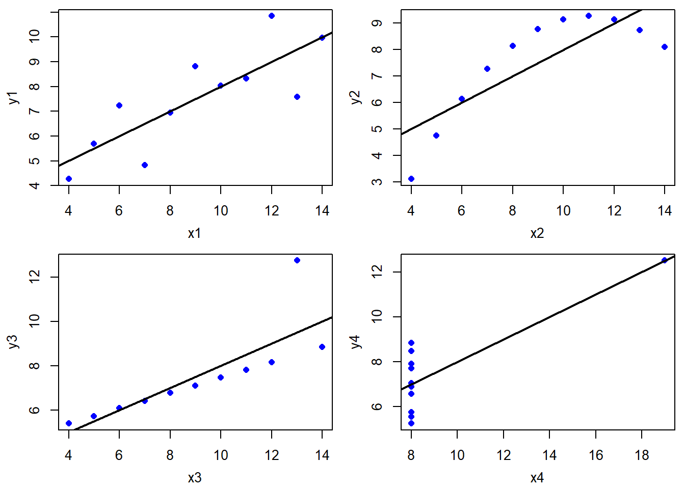
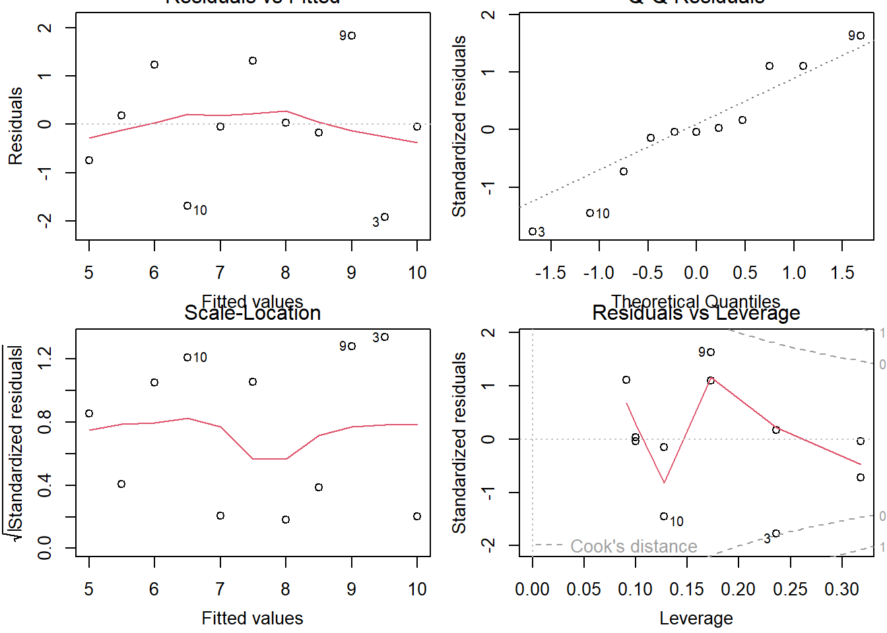
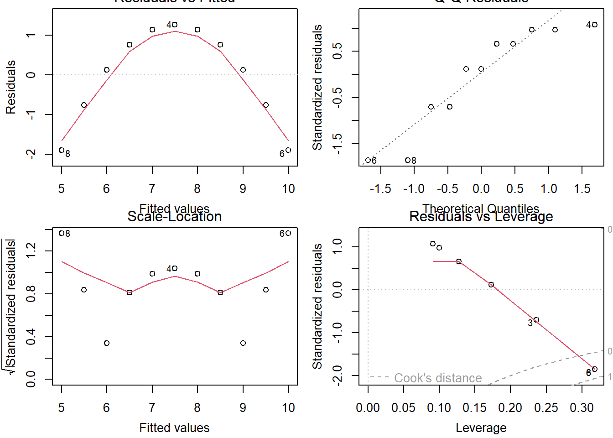
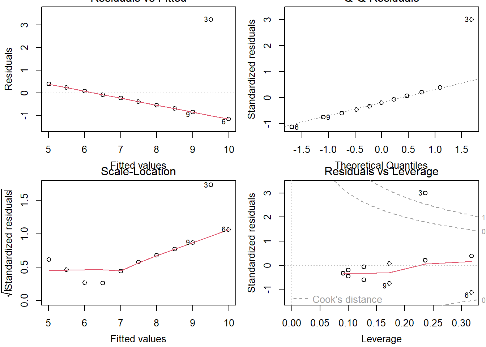
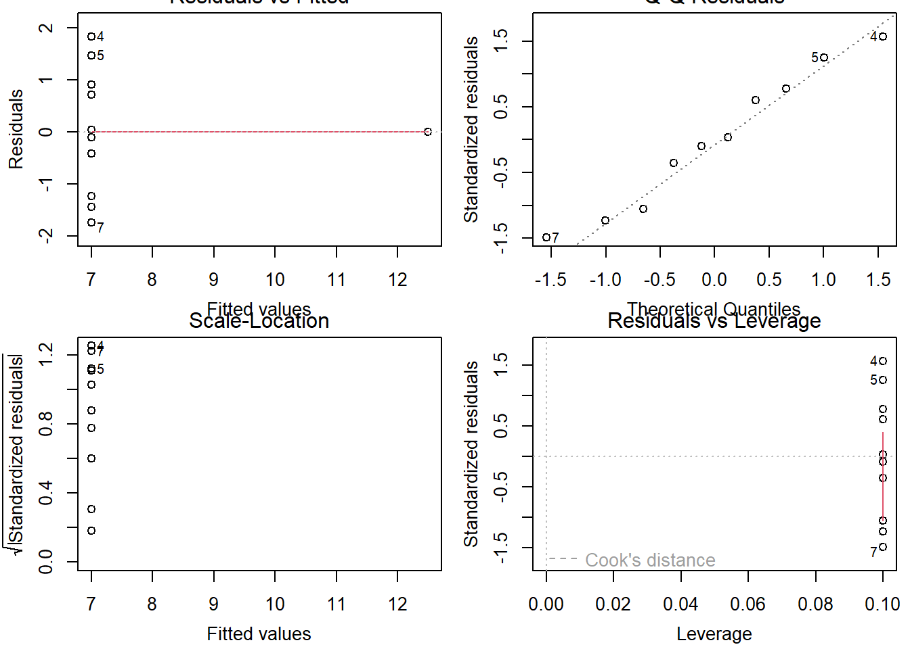

Chapter 1 Simple and multiple regression
This chapter is meant to give a short introduction to regression analysis. It is mostly meant to reintroduce some basic concepts, introduce notation, and get everybody on the same page.
1.2 Example to illustrate assumptions
Code
data(anscombe)
lm1 <- lm(y1 ~ x1, anscombe)
lm2 <- lm(y2 ~ x2, anscombe)
lm3 <- lm(y3 ~ x3, anscombe)
lm4 <- lm(y4 ~ x4, anscombe)
# Compare estimates
rbind(coef(lm1), coef(lm2), coef(lm3), coef(lm4))## (Intercept) x1
## [1,] 3.000091 0.5000909
## [2,] 3.000909 0.5000000
## [3,] 3.002455 0.4997273
## [4,] 3.001727 0.4999091Code
# Plot data
par(mfrow = c(2,2), mai = c(.6, .6, .1, .1), mgp = c(2.4, 1, 0))
plot(y1 ~ x1, anscombe, pch = 16, col = "blue")
abline(lm1, lwd = 2)
plot(y2 ~ x2, anscombe, pch = 16, col = "blue")
abline(lm2, lwd = 2)
plot(y3 ~ x3, anscombe, pch = 16, col = "blue")
abline(lm3, lwd = 2)
plot(y4 ~ x4, anscombe, pch = 16, col = "blue")
abline(lm4, lwd = 2)
Code
# Look at assumption violations
par(mfrow = c(2,2))
plot(lm1)
Code
plot(lm2)
Code
plot(lm3)
Code
plot(lm4)
Code
# Reshape data frame to long format
dat <- reshape(anscombe,
direction = "long",
varying = list(paste0("x", 1:4), paste0("y", 1:4)),
timevar = "reg",
v.names = c("x", "y"))[, -4] # drop id
lattice::xyplot(y ~ x | as.factor(reg), dat, pch = 16, type = c("p", "r"))Code
lattice::xyplot(y ~ x | as.factor(reg), dat, pch = 16, type = c("p", "smooth"))1.3 Exercises
Exercise 1
Simulate a data set based on a simple regression model with
\[\begin{align*} \beta_0 & = 0.2\\ \beta_1 & = 0.3\\ \sigma & = 0.5\\ x & \in [1, 20]~\text{in steps of 1} \end{align*}\]
What functions in R do we need?
Code
x <- 1:20
n <- length(x)
a <- 0.2
b <- 0.3
sigma <- 0.5
y <- 0.2 + 0.3*x + rnorm(n, sd = sigma)
dat <- data.frame(x, y)
lm1 <- lm(y ~ x, dat)
summary(lm1)
mean(resid(lm1))
sd(resid(lm1))
hist(resid(lm1), breaks = 15)Code
# plot data
plot(y ~ x, dat)
abline(lm1)Exercise 2
Simulate data with the parameters from Exercise 1
Do not assume that we have one subject per value for \(x\), but more than one subject
Simulate data for \(n = 40\) and \(n = 100\)
Hint: Use
sample(x, n, replace = TRUE)Re-cover your parameters as done on slide 14
What happens to your standard errors?
Code
n <- 100 # 40
x0 <- 1:20
x <- sample(x0, n, replace = TRUE)
a <- 0.2
b <- 0.3
sigma <- 0.5
y <- 0.2 + 0.3*x + rnorm(n, sd = sigma)
dat <- data.frame(x, y)
pars <- replicate(2000, {
ysim <- 0.2 + 0.3 * x + rnorm(n, sd = sigma)
lm1 <- lm(ysim ~ x, data = dat)
c(coef(lm1), sigma(lm1))
})
rowMeans(pars)
# standard errors
apply(pars, 1, sd)
hist(pars[1, ])Code
hist(pars[2, ])Code
hist(pars[3, ])Code
plot(y ~ jitter(x), dat)Exercise 3
Create two vectors \(x\) and \(y\) with 100 observations each and \(X \sim N(1,1)\) and \(Y \sim N(2,1)\).
Create a data frame with variables
id,groupandscore. \(x\) and \(y\) are your score values.Conduct a \(t\) test assuming that \(X\) and \(Y\) are independent having the same variances.
Then use the function
aov()to compute an analysis of variance for these data.Use then function
lm()for a linear regression with predictorgroupand dependent variablescore.Compare your results.
Code
x <- rnorm(100, mean = 1)
y <- rnorm(100, mean = 2)
dat <- data.frame(id = 1:200,
group = rep(c("x","y"), each = 100),
score = c(x, y))
rm(x,y)
t1 <- t.test(score ~ group, data = dat, var.equal = TRUE)
lm1 <- lm(score ~ group, data = dat)
aov1 <- aov(score ~ group, data = dat)
(stat <- list(
coef = matrix(c(t1$estimate, lm1$coef, aov1$coef),
nrow = 2,
ncol = 3,
dimnames = list(NULL, c("ttest", "lm", "aov"))),
statistics = matrix(c(t = t1$statistic^2,
Flm = summary(lm1)$fstatistic[1],
Faov = unlist(summary(aov1))[7]),
nrow = 1,
ncol = 3,
dimnames = list(NULL, c("t","Flm","Faov"))))
)Exercise 4
The data set
carscontains speed and stopping distances of 50 carsEstimate the regression model \[ dist_i = \beta_0 + \beta_1 speed_i + \varepsilon_i \]
How much variance of the stopping distances is explained by speed?
Look at the residuals of the model. Are there any systematic deviances?
Now estimate the model \[ dist_i = \beta_0 + \beta_1 speed_i + \beta_2 speed^2_i + \varepsilon_i \]
Hint: Use
I(speed^2)in the model formulaWhich model fits the data better?
Code
data(cars)
lm1 <- lm(dist ~ speed, data = cars)
summary(lm1)
hist(resid(lm1))Code
par(mfrow = c(2,2))
plot(lm1)Code
lm2 <- lm(dist ~ speed + I(speed^2), data = cars)
anova(lm1, lm2)